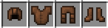
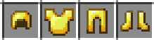
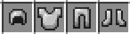
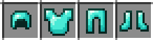
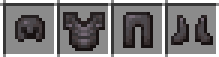
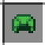
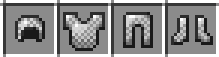

Armures :
Minecraft propose une variété d'armures, chacune offrant une protection différente contre les dangers qui rôdent dans le monde cubique. Ces équipements essentiels permettent aux joueurs de se défendre contre les attaques de créatures hostiles, les chutes et d'autres menaces. Voici une description détaillée de toutes les armures disponibles dans le jeu :
Armure en cuir : Matériau : Fabriquée avec des pièces de cuir. Apparence : Teinturable avec différentes couleurs, permettant une personnalisation visuelle. Protection : La plus faible de toutes les armures, mais idéale pour une protection facile en début de partie.
Armure en or : Matériau : Confectionnée avec des lingots d'or. Apparence : Dorée et brillante. Protection : Légèrement supérieure à l'armure en cuir, mais moins durable que d'autres matériaux.
Armure en fer : Matériau : Fabriquée à partir de lingots de fer. Apparence : Aspect métallique et robuste. Protection : Fournit une défense solide, un choix fréquent pour les joueurs cherchant un équilibre entre protection et ressources utilisées.
Armure en diamant : Matériau : Composée de diamants. Apparence : Scintillante et distinctive. Protection : Offre la deuxième meilleure protection du jeu, idéale pour les explorations en profondeur et les rencontres avec des ennemis puissants.
Armure en netherite : Matériau : Créée en améliorant l'armure en diamant avec des lingots de netherite. Apparence : Aspect sombre et imposant. Protection : La plus élevée dans le jeu. Sa résistance au feu et à la lave en fait le choix ultime pour la survie.
Armure en écailles de tortue : Matériau : Faite avec des écailles de tortue. Apparence : Légère et aquatique. Protection : Modérée, mais permet de prolonger la durée de respiration sous l'eau.
Armure en maille : Fabrication : doit être trouvée dans des coffres de structures. Apparence : Faite de mailles métalliques. Protection : Similaire à l'armure en fer, mais plus rare.
Chaque type d'armure peut être enchanté avec différents enchantements pour améliorer ses propriétés, offrant ainsi aux joueurs une personnalisation avancée en fonction de leur style de jeu et des défis auxquels ils sont confrontés dans l'univers de Minecraft.